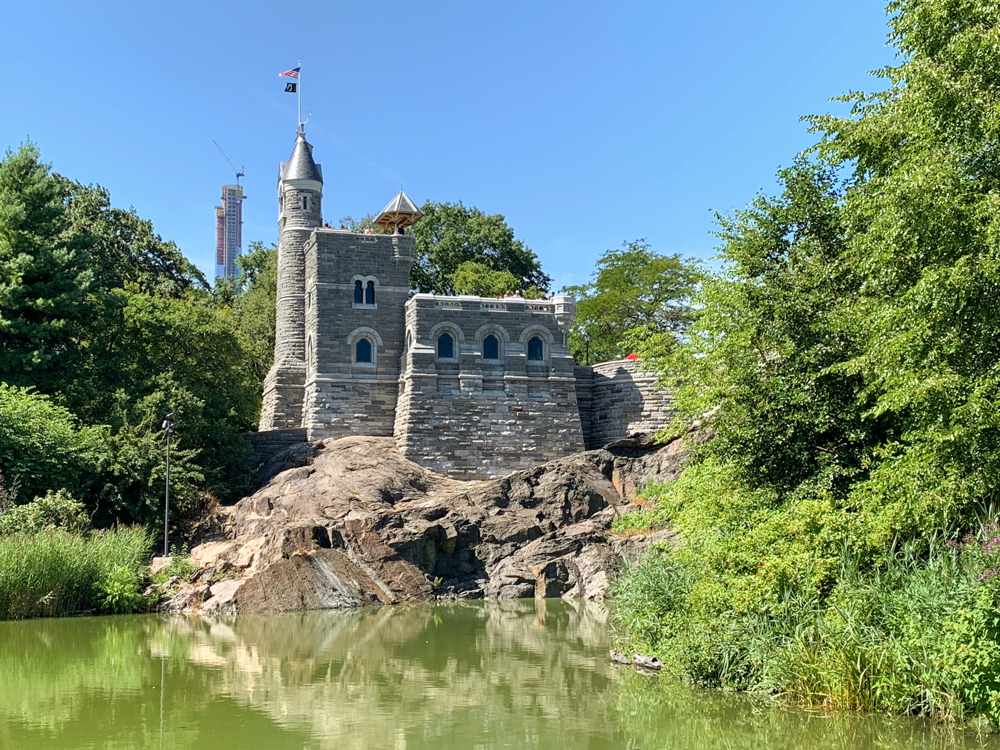
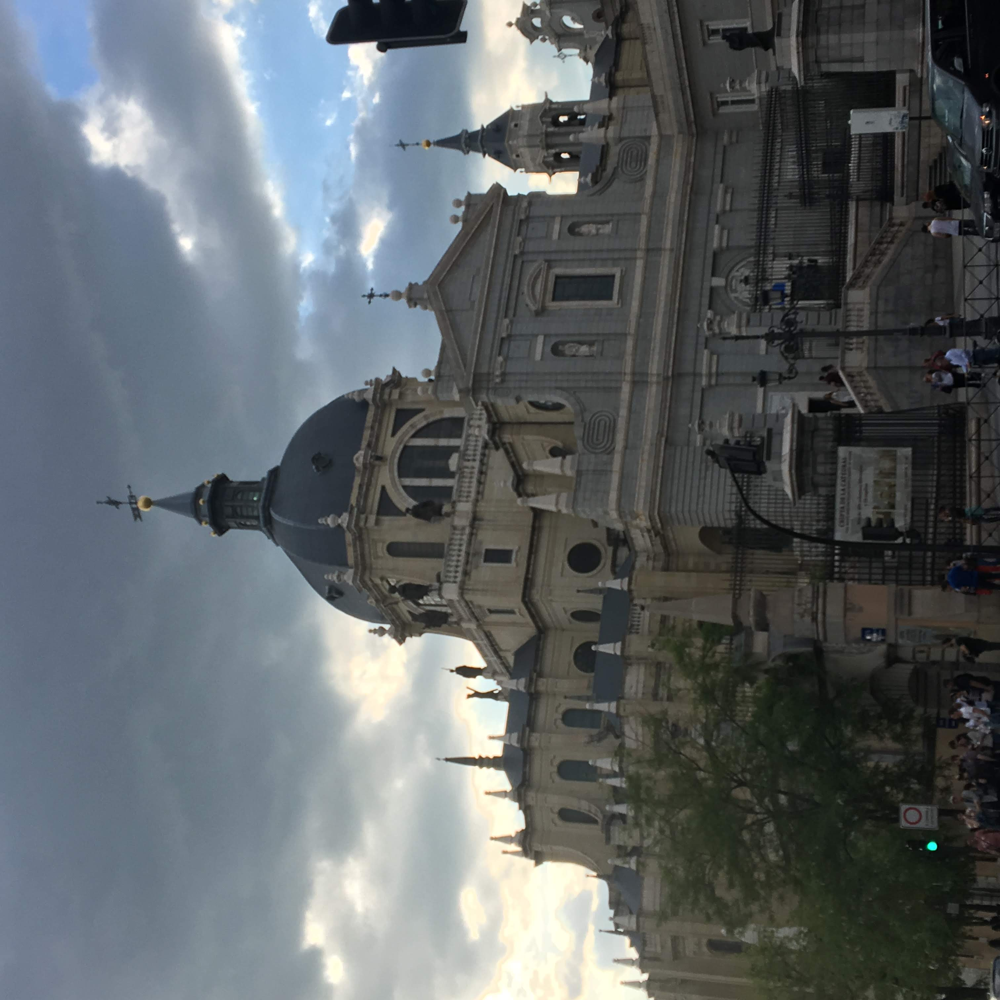

july 23, 2022
Luxembourg City
Luxembourg City, perched atop steep cliffs, is a mesmerizing blend
of ancient and modern. Its UNESCO-listed Old Town whispers tales of
history, while gleaming buildings highlight its status as a
financial hub. Amidst this, lush parks and valleys offer tranquil
escapes, making it a must-visit European gem.

june 23, 2022
Iguazú Falls
Iguazú Falls, straddling Argentina and Brazil, is a breathtaking
natural wonder. Comprising 275 cascades, it dwarfs visitors with its
scale. The surrounding rainforest teems with diverse wildlife,
enhancing the experience.

May 23, 2022
Lisbon, Portugal
Lisbon, Portugal's sun-kissed capital, is a city of rich history and
vibrant culture. Perched on seven hills, it offers stunning views,
historic trams, and a lively, maritime-infused atmosphere.

May 23, 2022
New York City
New York City, with its iconic skyline, buzzed with energy and
endless possibilities. Navigating its streets, I was immersed in a
blend of cultures, history, and the vibrancy of urban life.

April 23, 2022
Madrid
Madrid, with its rich history and artful streets, pulsed with a
unique blend of tradition and modernity. Wandering through its
plazas, I was captivated by the city's passionate spirit and
architectural grandeur.

March 23, 2022
Paris
Paris, often hailed as the "City of Love," radiated with romance,
from its iconic Eiffel Tower to its charming Montmartre streets. As
I strolled along the Seine and explored its world-renowned museums,
the city's artistic and historical richness enveloped me.